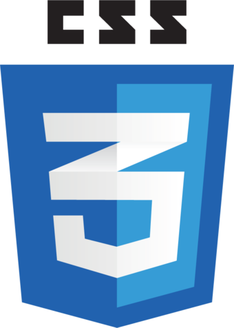

You're Welcome!
Welcome to JSLearn! In this course you can learn JS for Web. With this knowledge you can edit, add, remove and do more intresting things with HTML. JavaScript is one of the most popular programming language. All interactive that you saw in different sites - it is JavaScript.

+
+
.png)
=
 Supports object-oriented, imperative and functional styles. It is an implementation of the ECMAScript standard. JavaScript is commonly used as an embedded language for programmatically accessing application objects. It is most widely used in browsers as a scripting language for giving interactivity to web pages. JavaScript was influenced by many languages; during development, the goal was to make the language look like Java, but easy for people without programming experience. JavaScript is not spoken by any company or organization, which distinguishes it from a number of programming languages used in web development
Supports object-oriented, imperative and functional styles. It is an implementation of the ECMAScript standard. JavaScript is commonly used as an embedded language for programmatically accessing application objects. It is most widely used in browsers as a scripting language for giving interactivity to web pages. JavaScript was influenced by many languages; during development, the goal was to make the language look like Java, but easy for people without programming experience. JavaScript is not spoken by any company or organization, which distinguishes it from a number of programming languages used in web development
After this course you will be able to create interactive sites to your taste and color. I hope I can teach you JavaScript. Good luck:)